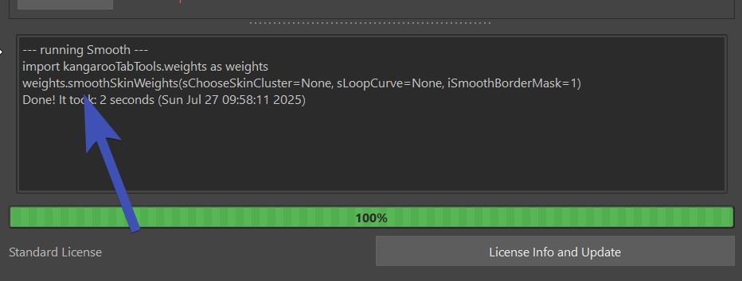
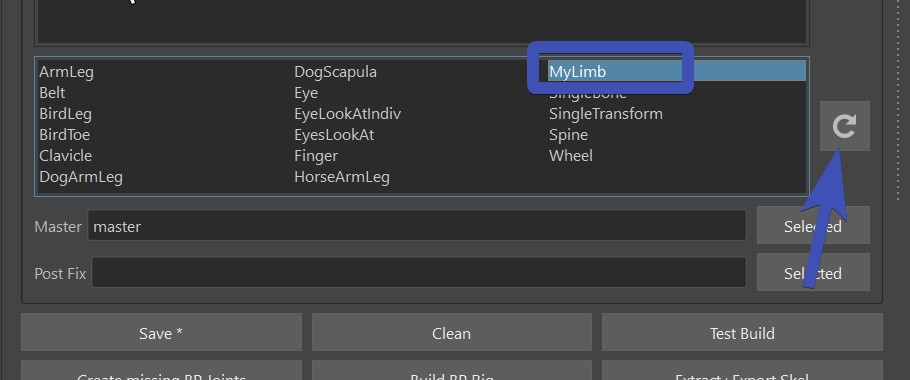

Python II
Running Kangaroo Tools
Many tools in Kangaroo you can run separately in Python. Whenever you click some of the Tool Buttons, check the output log at the bottom: 
Extra Builds
In Python I we've learned how to add some fun python stuff to our character file. But what if we want to make a company wide tool
that other people can run, too - so everyone can just add the file at the top as shown in this gif:
 This is where extrabuilds come in.
This is where extrabuilds come in.
First we'll have to tell kangaroo with the Environment Variable KANGAROO_EXTRABUILDS_PATH a location where we have other python files with some builds.
If you want to do that with the pathEnv.mel file just to get started quickly - the entry would look something like this:
putenv "KANGAROO_EXTRABUILDS_PATH" "myBuilds@D:/mayaTools/KANGAROO/myExtraBuilds";
Btw, for more than one build folder you'd just add them all with the same variable but separated with the ; sign
putenv "KANGAROO_EXTRABUILDS_PATH" "myBuildsA@D:/mayaTools/KANGAROO/myExtraBuildsA; myBuildsB@D:/mayaTools/KANGAROO/myExtraBuildsB";
You could start your new build file by just copying an existing one from the kangarooBuilds folder and rename.
Or just start with a simple and clean file, and call it myNewBuild_v0.py:
import kangarooTabTools.builder as builderTools
import kangarooTools.utilFunctions as utils
kBuilderColor = utils.uiColors.yellow
@builderTools.addToBuild(iOrder=16)
def simpleFunction(iLuckyNumber=20, sObjects=[]):
print ('Hello, your lucky number is %d' % iLuckyNumber)
print ('And the objects are: %s' % sObjects)
Then you can add it to the builder like shown above.
Before or After LoadDeformer()
If you are creating a function that generates joints that need to be skinned, you have to be very aware if
the function is before loadDeformer() (iPriority smaller than 50) or after (iPriority bigger than 50).
The easiest thing is to add it before. Then at the time it loads the deformer, the joints are there and
everybody is happy.
But sometimes it makes sense to put the function after.
For those cases, at the time you run the function you have to assume that the joints may or may not already be there,
since loadDeformer() creates an empty joint at the origin if it doesn't exist yet. This means you have to restructure your joint creating
code a bit to make it check first if joint is already there or not.
This example is from the NLF setup:
sJ = 'jnt_%s_nlf_%03d' % (sSide,j)
if cmds.objExists(sJ):
cmds.parent(sJ, jointOrGroup(sParentJoint))
else:
cmds.createNode('joint', n=sJ, p=jointOrGroup(sParentJoint))
cmds.setAttr('%s.jo' % sJ, 0,0,0)
Connecting to Studio Pipeline
If you've managed to read until here, you are ready to connect kangaroo to your studio pipeline.
importModel() replace
Create a new Extra Builds file as shown in previous chapter,
and add a function in there called something like importModel2(). And uncheck the old one (importModel()).
In importModel2() create some code that looks in the files of your studio pipeline and imports the correct model.
For doing that you'll most likely need the code snippets in Getting Asset Info for getting your current
asset infos.
Tip
For finding the right file, it's best to use the python os module. And once you've cut together the file path with that, you can use the following function to import the file. The importMayaFiles() is good because it can return the nodes he imported.
import kangarooTools.utilFunctions as utils
utils.importMayaFiles(sFiles, sNamespace=None, bReference=False, bReturnAllNodes=False)
prepareForPublish() replace
Let's look at the function prepareForPublish() in general_v13.py.
@builderTools.addToBuild(iOrder=1010)
def prepareForPublish(sRenameMaster='master', bDeleteUnrealModel=True):
sAsset = assets.assetManager.getCurrentAsset()
sUnrealModel = utils.data.get('sUnrealModel', None)
if not sUnrealModel:
bDeleteUnrealModel = False
utils.addStringAttr('master', 'sOldMasterName', 'master')
sMaster = cmds.rename('master', sRenameMaster)
ddMasters = {sMaster:{'sFilename':'RIG_%s_[v].ma' % sAsset,
'sExtraFiles': 'fbx/GAME_%s.fbx' % (sAsset),
'sDelete':['GAMEMODEL'] if bDeleteUnrealModel else []}}
utils.data.store('ddMasters', ddMasters, sNode=utils.kExportNode)
utils.data.store('bSaveInsteadOfExport', True, sNode=utils.kExportNode)
Change File name or Delete Nodes
Focus on the dictionary:
ddMasters = {sMaster:{'sFilename':'RIG_%s_[v].ma' % sAsset,
'sExtraFiles': 'fbx/GAME_%s.fbx' % (sAsset),
'sDelete':['GAMEMODEL'] if bDeleteUnrealModel else []}}
Copy Output File to a certain Folder
You can also add sCopyToOutputFolder:
ddMasters = {'master':{'sFilename':'RIG_%s_[v].ma' % sAsset,
'sCopyOutputToFolder': os.path.join(sParentFolder, '[v]'),
'sExtraFiles': ['fbx/RIG_%s.fbx' % (sAsset), 'fbx/RIGSIMPLE_%s.fbx' % (sAsset)],
'sDelete':['UNREALMODEL'] if bDeleteUnrealModel else []}}
Run a function after export
In some cases the ddMasters keys are not enough. Sometimes in order to put things into the right place, you'll have to add some python code
that manipulates the other pipeline, even runs some of their functions.
This can be done with:
nodes.data.store('sShareFuncPre', 'rig.global.pre_publish', sNode=nodes.kExportNode)
nodes.data.store('sShareFuncPost', 'rig.global.post_publish', sNode=nodes.kExportNode)
The more useful one is definitely the sShareFuncPost one. You basically pass a function location that gets run
after you've published to kangaroo in the usual way.
Keep in mind that the function you are passing here (rig.global.post_publish in the example above) needs to be importable in python.
So the publish function later will run it as something like:
import rig.global
rig.global.post_publish(sProject, sToAssetFolder, sComments)
Yes, you saw right - it's passing some infos. So the post_publish() function in this example needs to be declared in rig.gobal as
def post_publish(sProject, sToAssetFolder, sComments):
print ('sProject: ', sProject)
print ('sToAssetFolder: ', sToAssetFolder)
print ('sComments: ', sComments)
Custom Limbs
Writing your own puppet limbs is where things get very advanced, therefore a decent python level is required.
Start by creating an empy folder, and declare it with the Environment Variable KANGAROO_EXTRALIMBS_PATH.
After setting the Environment Variable restart Maya!
Then copy/paste one of the existing limbs from the kangarooLimbs folder of your Kangaroo installation into that new folder.
Simplest one to start with is probably singleTransform.
So in this example copy the highest version of singleTransform - at the time of this writing singleTransform_v18.py - into that folder, and rename
it to reflect your new limb. It's important to keep the version syntax and make it start at version 0.
So for example: myLimb_v0.py
If you open the new file, the class name is probably still called LSingleTransform. Rename it - in the example above it would be LMyLimb. Ideally also change the value of the default attribute sName from 'singleTransform' to 'myLimb'.
At this point if you click the  (reload) button next to the Limbs Library,
the new limb should show up. If not, check you restarted maya after you've specified the Environment Variable.
(reload) button next to the Limbs Library,
the new limb should show up. If not, check you restarted maya after you've specified the Environment Variable.

Now you have a good starting point, and you can work on your newly created limb.
The attributes that you see in the Puppet tool on the right side are all either just the function parameters of the __init__() function or the feature functions (feature_fk() in this case)
The attachers get declared with extra functions:
def generateAttachers_init(self):
return {'root': {'sTrs':'tr', 'bMulti':False},
'scale': {'sTrs':'s', 'bMulti':False}}
dAttacherBuildData['root'] = (utils.getDagPath(self.cCtrl.sPasser), self.cCtrl)
The actual output joints are defined like this in the __init__() function:
self.dOutputs['main'] = None
return fks, cReturnCtrls, dAttacherBuildData